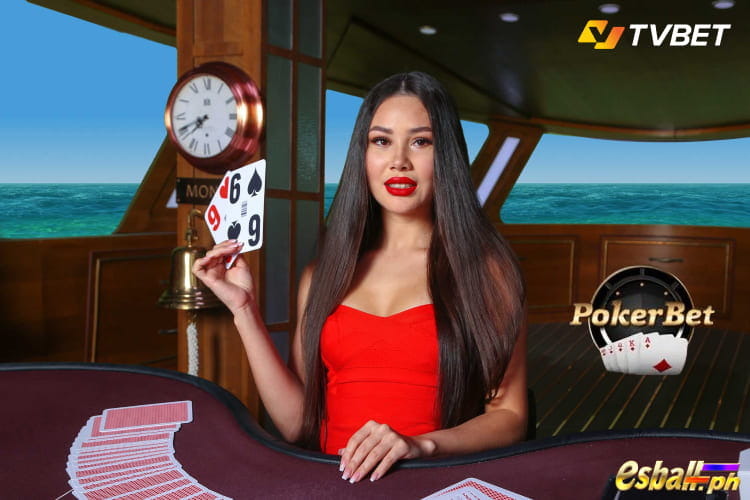

Poker Bet Game Introduction
Katulad ng regular na Texas Hold'em poker, ang Poker bet online ay binubuo ng limang round (Bet, Preflop, Flop, Turn, at River), kung saan ang mga manlalaro ay maaaring maglagay ng taya sa mga posisyon at kumbinasyon ng mga kamay. Ang laro ay nagbubukas sa LIVE mode, patuloy na tumatakbo nang walang mga pagkaantala.
Kabaligtaran sa tradisyonal na format ng Poker, ang TVBET Poker Bet ay hindi nagpapataw ng limitasyon sa manlalaro at nag-aalok ng maraming pagpipilian sa pagtaya sa mga kalahok. Ang layunin ay upang tipunin ang pinakamalakas na kumbinasyon ng mga card kumpara sa iba. Bilang karagdagan, ang mga manlalaro ay maaaring tumaya sa tagumpay ng isa sa anim na posisyon (1st hand, 2nd hand, atbp.) o sa isang winning hand na kumbinasyon.
Poker Bet online na laro sa pamamagitan ng TVBet Casino Games gumagamit ng karaniwang deck ng 52 card. Bago ang bawat round, ang mga taya ay maaaring gawin para sa patuloy na round at pagkatapos ay para sa mga susunod na round.

Panimula sa TVBet Poker Bet Online
Ang TVBet Poker Bet ay isang online na rendition ng Texas Hold'em poker, na magagamit para sa live na paglalaro 24/7. Gumagamit ito ng isang standard na deck ng 52 card, na ang layunin ay makakuha ng higit na mataas na kamay kaysa sa iyong mga kalaban. Ang mga manlalaro ay may opsyon na tumaya sa isa sa anim na kamay upang lumabas na panalo o sa panalong kumbinasyon, na gumagawa ng mga desisyon batay sa table dynamics. Ang bawat laro ay nagbubukas sa apat na yugto - preflop, flop, turn, at river.
Bago ang pagsisimula ng bawat laro at maging ang paparating na mga draw, maaaring maglagay ng taya. Bukod dito, ang mga manlalaro ay may pagkakataon na pagsamahin ang mga taya sa iba't ibang mga draw, parehong sa loob ng Poker Bet at sa iba pang mga laro, na nagreresulta sa pinahusay na logro. Bilang karagdagan sa kanilang mga regular na panalo, ang mga manlalaro ay maaari ding maging kuwalipikado para sa mga bonus sa anyo ng mga jackpot, na may potensyal para sa maramihang mga jackpot na iginawad sa loob ng isang laro.
Mga Panuntunan sa Pagtaya sa TVBet Poker
Ang laro ay binubuo ng limang round, kung saan ang mga taya sa mga kamay at mga kumbinasyon ay tinatanggap. Bago ang bawat nagpapatuloy na laro, ang mga punter ay maaaring maglagay ng taya sa parehong kasalukuyang laro at paparating na logro. Ang nagtatanghal ay nagbibigay ng 12 card para sa bawat isa sa anim na posisyon, nang paisa-isa. Kapag ang lahat ng mga kamay ay nakatanggap ng dalawang card bawat isa, magsisimula ang mga round ng laro.
Ang paunang round ng pagtaya, na kilala bilang 'Bet' round, ay nauuna sa card dealing. Dito, ang mga manlalaro ay maaaring tumaya sa mga kamay o mga kumbinasyon batay sa mga karaniwang odds, na may opsyon na maglagay ng mga taya sa laro sa hinaharap sa mga logro na ito.
Kasunod ng Bet round ay ang Preflop round. Sa yugtong ito, ang mga posibilidad para sa lahat ng mga posisyon at mga kumbinasyon ng kamay ay nababagay, na magsisimula sa ikalawang round ng pagtaya.
Susunod ay ang Flop round, kung saan ang dealer ay nag-aalis ng isang card mula sa deck pagkatapos ng ikalawang round at nagpapakita ng tatlong community card nang sabay-sabay. Kasunod nito, ang mga logro para sa bawat kamay at kumbinasyon ay ina-update, at ang pagtaya para sa ikatlong round ay magsisimula.
Pagkatapos ng Flop round, aalisin ng dealer ang isa pang card mula sa deck at ilalabas ang ikaapat na community card, na humahantong sa ikaapat na round ng pagtaya. Ang mga logro ay binago para sa bawat kamay at kumbinasyon sa yugtong ito.
Sa ilang pagkakataon, ang mga kamay o kumbinasyon ay maaaring mawala ang kanilang potensyal na manalo pagkatapos ng Flop o Turn round. Ang mga pagpipiliang ito ay may label na 'lock' at ipinapakita sa screen sa halip na mga odds.
Bukod pa rito, maaaring hawak na ng ilang partikular na kamay ang pinakamataas na posibleng kumbinasyon para sa laro, na may label na 'panalo' at ipinapakita sa screen sa halip na mga odds. Ang mga taya ay hindi na tatanggapin sa mga resultang minarkahan bilang 'panalo' at 'lock', bagama't ang mga kalahok ay maaaring malayang tumaya sa ibang mga resulta.
Ang laro ay nagtatapos sa 'ilog' na round, kung saan ang dealer ay nag-aalis ng isang card mula sa deck at ipapakita ang ikalimang community card. Tinutukoy ng programa ang kinalabasan ng kasalukuyang laro batay sa mga huling kumbinasyon ng kamay.
Mga Terminolohiya at Kahulugan sa TVBet Poker Bet Online game
- List of markets - Maaaring ma-access ng mga bettors ang isang seleksyon ng mga market, bawat isa ay nagbibigay ng impormasyon tulad ng market code, market name na nagbabalangkas sa mga kondisyon ng panalong, at nauugnay na logro. Ang mga taya sa laro ay inilalagay ayon sa mga kinalabasan na ipinakita sa loob ng listahang ito ng mga merkado.
- Bet - Upang maglagay ng taya, pipili ang bettor ng isa o higit pang mga resulta mula sa listahan ng mga market, sa paniniwalang ang kanilang halaga o kundisyon ay makakaayon sa resulta ng laro. Magagawa ito sa pamamagitan ng pagpili ng resulta alinman sa ilalim ng livestream o direkta sa screen.
- Outcome - Isang pagpipilian sa loob ng listahan ng mga merkado kung saan maaaring ilagay ang mga taya.
- Outcome code - Ang natatanging numero na ibinigay sa naka-print na listahan ng mga merkado o ipinapakita sa monitor ng broadcast, na nagsisilbing identifier para sa partikular na resulta sa loob ng software ng pagtaya.
- Odds - Ang mga logro ay kumakatawan sa isang numerical multiplier, na bilugan sa dalawang decimal na lugar, na inilalaan sa isang partikular na resulta sa laro. Tinutukoy ng multiplier na ito kung hanggang saan ang kabuuang stake ng bettor sa kinalabasan na ito ay mapaparami kung ang resulta ng laro ay naaayon sa napiling resulta o kundisyon. Ang mga logro ay sumasalamin sa mathematical na probabilidad ng isang resulta: mas malapit ang mga logro sa isa (1.00), mas mataas ang posibilidad na ang resulta o kundisyon ng taya ay tutugma sa resulta ng laro.
- Single - Isang solong taya na inilagay sa isang partikular na resulta, kung saan ang mga panalo ay kinakalkula bilang ang halaga ng stake na pinarami ng mga logro na nauugnay sa napiling resulta.
- Accumulator - Isang maramihang taya na inilagay sa ilang independiyenteng resulta, kung saan ang mga panalo ay natutukoy sa pamamagitan ng pagpaparami ng halaga ng stake sa mga logro ng nagtitipon. Ang mga odds ng accumulator ay kinakalkula sa pamamagitan ng pagpaparami ng mga odds ng bawat indibidwal na resulta na kasama sa accumulator. Para maituring na matagumpay ang nagtitipon, ang lahat ng resulta sa loob nito ay dapat na mahulaan nang tumpak.
- System - A collection of accumulators, the quantity of which is determined by the bettor. The total winnings are calculated as the cumulative winnings from all accumulators within the system. It's important to note that winnings from a system may be lower than the total stake placed.
- Bet slip - Ang bet slip ay isang electronic o naka-print na dokumento na nagsisilbing kumpirmasyon ng transaksyon (taya) na nakumpleto sa pagitan ng bettor at bookmaker para sa isa o higit pang taya. Karaniwang kinabibilangan ito ng mga detalye tulad ng petsa at oras ng taya, numero ng bet slip, impormasyon tungkol sa mga indibidwal na taya na inilagay, kabuuang taya, pangkalahatang logro, at ang uri ng taya (single, accumulator, o system), bukod sa iba pang mahalagang impormasyon.
- Event (game) - Ang isang kumpletong card deal ay binubuo ng lahat ng round (preflop, flop, turn, at river), na nagsisimula sa pag-shuffling ng mga card at nagtatapos sa paglalahad ng dealer ng ikalima at huling nakabahaging card (ilog) sa mesa, na sinusundan ng pag-anunsyo ng resulta at pagtukoy sa (mga) nagwagi.
- Betting round - Isang tiyak na tagal, na sinusubaybayan ng isang countdown timer, kung saan ang mga taya ay bukas para sa pagtanggap. Ang bawat laro ay binubuo ng apat na natatanging round ng pagtaya: preflop, flop, turn, at river.
- Deck - Isang kumpletong deck ng 52 (limampu't dalawang) card, na binubuo ng isang card na kumakatawan sa bawat isa sa labintatlong halaga sa bawat isa sa apat na suit.
- Value - Isang notasyon na nagsasaad ng ranggo ng card sa loob ng deck, mula dalawa hanggang alas, kung saan:
- 2 ay kumakatawan sa dalawa
- Ang 3 ay kumakatawan sa tatlo
- 4 ay kumakatawan sa apat
- 5 ay kumakatawan sa lima
- Ang 6 ay kumakatawan sa anim
- 7 ay kumakatawan sa pito
- 8 ay kumakatawan sa walo
- 9 ay kumakatawan sa siyam
- 10 ay kumakatawan sa sampu
- Si J ay kumakatawan kay jack
- Ang Q ay kumakatawan sa reyna
- K ay kumakatawan sa hari
- Ang A ay kumakatawan sa ace, karaniwang may hawak na pinakamataas na halaga, maliban kung ito ay lalabas bilang mababang card sa mga partikular na kumbinasyon tulad ng "straight" o "straight flush." Ang card na may pinakamababang halaga sa deck ay dalawa.
- Suit - Isa sa mga katangian ng isang card. May apat na suit: puso (♥), diamante (♦), spade (♠), at club (♣), at ang bawat card ay minarkahan ng simbolo na kumakatawan sa suit nito, kasama ang nakatalagang halaga nito.
- Shoe - Isang device na ginagamit upang hawakan ang mga shuffled card, kung saan ang mga ito ay iginuhit isa-isa at inilagay sa mesa.
- Shuffling machine - Isang espesyal na sertipikadong kagamitan na ginagamit upang i-shuffle ang mga card nang random.
- Spare deck - Isang pangalawang deck na magagamit para sa pag-shuffling at paggamit ng host kung sakaling ang deck na na-shuffle sa shuffling machine ay hindi na magagamit para sa laro.
- Cut card - Isang natatanging plastic card na ginagamit lamang upang takpan ang ilalim na card ng deck.
- Hand - Isa sa anim na itinalagang posisyon sa mesa na aktibong nakikilahok sa laro, na karaniwang tinutukoy ng mga may numerong kahon na inilagay sa tabi ng tabletop, mula 1 hanggang 6.
- Shared cards - Isang set ng limang card na ibinahagi ng lahat ng manlalaro sa mesa, na ginamit upang bumuo ng pinakamataas na ranggo na kumbinasyon na posible para sa kani-kanilang mga kamay.
- Combination - Isang kumbinasyon ng limang card na nabuo mula sa kumbinasyon ng parehong mga shared card at mga card na hawak ng mga manlalaro, o mula lamang sa mga shared card. Ang pinakamataas na ranggo na kumbinasyon ay tumutukoy sa panalo.
- Kicker - Ang isang card na hindi bahagi ng isang kumbinasyon ngunit nagsisilbing masira ang mga ugnayan kapag ang dalawa o higit pang mga kamay ay nagtataglay ng mga kumbinasyon ng pantay na halaga. Ang mga kamay ay maaaring magsama ng isa o higit pang mga kicker.
- Flop - Ang unang tatlong nakabahaging card, na ipinamahagi kasunod ng ikalawang round ng pagtaya.
- Turn - Ang ika-apat na nakabahaging card, ay ibinahagi kasunod ng flop at ang ikatlong round ng pagtaya.
- River - Ang ikalima at huling nakabahaging card, na ipinamahagi kasunod ng flop, turn, at ikaapat na round ng pagtaya.
- Jackpot - Isang karagdagang premyo na maaaring mapanalunan kasama ng mga panalo sa bet slip, na iginawad nang random. Ang kasalukuyang halaga ng jackpot ay ipinapakita sa monitor ng broadcast ng laro at maaabot sa anumang laro.
- Mega Jackpot - Isang karagdagang gantimpala na maaaring makuha kasama ng mga panalo sa bet slip, na may mas malaking halaga kumpara sa regular na jackpot. Ito ay random na iginawad, kahit na mas madalas kaysa sa karaniwang jackpot. Ang kasalukuyang halaga ng mega jackpot ay ipinapakita sa monitor ng broadcast ng laro at maaabot sa anumang laro.
- Poker Jackpot - Isang karagdagang reward na maaaring makuha kasama ng mga panalo sa bet slip, partikular na ibinibigay sa Poker Bet online na mga laro ng TVBet Casino Games . Ito ay iginawad nang random, ngunit eksklusibong magagamit sa loob ng mga larong Poker.

TVBet Poker Bet Online Game Flow
Ang bawat kamay ay binibigyan ng 2 card na nakaharap, habang ang mga nakabahaging card ay nakaharap din.
Ang layunin ng laro ay para sa bawat kamay na lumikha ng pinakamalakas na kumbinasyon gamit ang limang card mula sa kanilang mga dealt card at ang shared card sa mesa. Panalo ang (mga) kamay na may pinakamataas na ranggo na kumbinasyon.
Sa kaganapan ng isang tabla kung saan ang dalawa o higit pang mga kamay ay nagbabahagi ng parehong pinakamataas na ranggo na kumbinasyon at ang isang kicker ay hindi nalutas ang nanalo, ang mga payout ay ipapamahagi sa lahat ng mga taya na tumaya sa alinman sa mga tumatali na mga kamay. Kung ang pinakamataas na kumbinasyon ay nabuo lamang ng mga shared card, ang mga payout ay kinakalkula at iginagawad sa lahat ng bettors na naglagay ng taya sa anumang kamay.
Mga posibleng kumbinasyon mula sa pinakamababa hanggang sa pinakamataas na marka:
- High Card - Kung sakaling wala sa mga kamay ang matagumpay na nakabuo ng kumbinasyon pagkatapos maibigay ang river card, ang nagwagi ay tinutukoy ng pinakamataas na card. Sa ganitong mga kaso, ang mga halaga ng mga card sa bawat kamay ay inihambing, at ang kamay na ipinagmamalaki ang pinakamataas na halaga na kumbinasyon ay lumalabas na matagumpay. Kung maraming kamay ang nagtataglay lamang ng isang "mataas na kard," ang kamay na may nakatataas na kicker ay nakakasiguro ng panalo.
- One Pair - Ang Pair ay tumutukoy sa alinmang dalawang card na magkapareho ang halaga (tulad ng dalawang 6s o dalawang ace), tulad ng nakikita sa mga kumbinasyon tulad ng A+ A+ 3+ 8+ 10v. Kapag maraming kamay ang naglalaman ng Pares, ang tagumpay ay tinutukoy ng pares na may pinakamataas na halaga. Sa mga kaso kung saan ipinagmamalaki ng maraming kamay ang isang Pares ng parehong halaga, ang kamay na may superior kicker ay lalabas bilang panalo.
- Two Pair - Ang Two Pair ay binubuo ng dalawang set ng mga pares, bawat isa ay naglalaman ng dalawang card na may parehong halaga (halimbawa, Q+ Q▼ 74 74 3▼). Kapag maraming kamay ang humawak ng Dalawang Pares, ang tagumpay ay tinutukoy ng halaga ng pares na mas mataas ang ranggo. Sa mga pagkakataon kung saan ang maramihang mga kamay ay nagtataglay ng Dalawang Pares ng magkaparehong halaga, ang kamay na may superior kicker ay idineklara na panalo.
- Three of a Kind - Ang Three of a Kind ay binubuo ng tatlong card na may parehong halaga (halimbawa, J♦ J♥ Je 3▼ 84). Kapag maraming kamay ang humawak ng Three of a Kind, ang mananalo ay matutukoy sa halaga ng Three of a Kind. Sa mga kaso kung saan ang maramihang mga kamay ay nagtataglay ng Tatlo ng isang Uri ng parehong halaga, ang kamay na may nakatataas na kicker ay nanaig.
- Straight - Ang Straight ay kumbinasyon ng limang card na may magkakasunod na value (halimbawa, 5▼ 6+ 7+ 8+ 9▼). Sa isang scenario kung saan maraming kamay ang humawak ng Straight, ang kamay na may pinakamataas na value na Straight ang lalabas bilang panalo.
- Flush - Ang Flush ay binubuo ng anumang limang card ng parehong suit (halimbawa, K♣ Q♣ 9♣ 8♣ 5+). Kapag maraming kamay ang may Flush, mananaig ang may pinakamataas na halaga ng Flush.
- Full House - Ang Buong Bahay ay binubuo ng tatlong card na may parehong halaga at dalawa pang card na may parehong halaga (hal., K♦ K♣ 8v 8+ 8v). Kapag ikinukumpara ang mga kamay ng Full House, nanaig ang may pinakamataas na halaga ng Full House. Kung maraming mga kamay ang may parehong tatlong-card na halaga, ang isa na may pinakamataas na pares ng halaga sa loob ng Full House ang mananalo.
- Four of a kind - Ang Four of a Kind ay binubuo ng apat na card na may parehong halaga (hal., Av A+ A+ A+ 3). Sa paghahambing ng mga kamay sa Four of a Kind, nangingibabaw ang kamay na may pinakamataas na halaga na Four of a Kind. Kung maraming kamay ang magkakapareho ng Four of a Kind value, ang kamay na may superior kicker ang mananalo.
- Straight Flush - Ang Straight Flush ay binubuo ng limang card ng magkakasunod na value at parehong suit (hal., 6 7 8 9 10 - kung saan ang isang ace ay maaaring magsilbi bilang ang pinakamababang value card, hal., A♥ 2 3 4 5♥). Kapag inihambing ang mga kamay sa isang Straight Flush, ang kamay na may pinakamataas na halaga na Straight Flush ay lalabas na mananalo.
- Royal Flush - Binubuo ang Royal Flush ng limang card ng magkakasunod na value at parehong suit, partikular mula 10 hanggang Ace (10▼ J▼ Q▼ K♥ A♥). Ito ay nagraranggo bilang pinakamataas na kamay sa poker.
Ang bawat laro ay binubuo ng apat na round para sa pagsusumite ng standard at/o kumbinasyon ng mga bet slip.
Ang mga taya na inilagay sa iba't ibang round sa loob ng parehong laro ay hindi maaaring pagsamahin.
Kung sakaling ang anumang mga resulta ng laro ay hindi wasto para sa anumang kadahilanan, ang lahat ng mga taya sa loob ng kumbinasyon ng mga slip ng taya ay aayusin sa logro ng 1.00 at mag-aambag sa pangkalahatang posibilidad ng mga slip ng taya sa mga logro na ito.
Kapag nanalo ang jackpot, ang tatanggap ay makakatanggap ng abiso sa pamamagitan ng mensahe sa kanilang bet slip at sa pamamagitan ng broadcast.
- Ang taya lamang na may panalong bet slip ang karapat-dapat na kunin ang jackpot.
- Ang mga panalo ng jackpot ay kasama sa kabuuang payout para sa nanalong bet slip.
Kinokontrol ng kumpanya ng pagtaya ang ilang mga parameter, kabilang ang:
- Pamamahala ng jackpot.
- Ang pagtatakda ng maximum at minimum na mga stake, pati na rin ang mga limitasyon sa pinakamataas na panalo mula sa isang solong bet slip o resulta, kasama ang iba pang mga hadlang sa pananalapi.
- Pagtukoy sa mga logro na ipinakita sa listahan ng mga merkado at anumang mga pagsasaayos na ginawa sa mga logro na ito.
TVBet Poker Bet Game Procedure
Ang bawat laro ay sumusunod sa isang structured sequence:
- Preflop: Ang paunang round ng pagtaya ay magsisimula bago maipamahagi ang anumang card. Ang mga taya ay maaaring maglagay ng kanilang mga taya sa mga kamay o mga kumbinasyon sa pasimula ng mga logro. Pagkatapos, ang dealer ay magbibigay ng labindalawang card, na namamahagi ng dalawa sa bawat isa sa anim na kamay nang sunud-sunod, simula sa kamay 1 at nagtatapos sa kamay 6.
- Flop: Ito ay nagmamarka ng ikalawang round ng pagtaya. Kasunod ng pag-update ng mga logro para sa lahat ng mga kamay at kumbinasyon, ang ikalawang round ng pagtaya ay magsisimula. Kasunod nito, ang dealer ay agad na nakipag-deal ng tatlong shared card.
- Turn: Ang paglipat sa ikatlong round ng pagtaya, ang mga logro para sa lahat ng mga kamay at mga kumbinasyon ay binago, na magsisimula sa ikatlong round ng pagtaya. Kapag natapos ang pagtaya, ipapakita ng dealer ang ikaapat na nakabahaging card.
- River: Ang huling round ng pagtaya ay magsisimula na may na-update na odds para sa lahat ng kamay at kumbinasyon. Matapos magtapos ang round ng pagtaya, ipapakita ng dealer ang ikalimang shared card. Ang isang panalo ay tinutukoy, at ang dealer ay nag-aanunsyo ng mga kinalabasan bago i-shuffling muli ang mga card.

TVBet Poker Bet Special Cases
Ang mga nakanselang laro ay nagaganap sa ilalim ng iba't ibang pagkakataon, kabilang ang:
- Mga card na minarkahan o nasira.
- Ang mga card na hindi sinasadyang lumilitaw ay nakaharap sa deck, na nagpapakita ng kanilang halaga, suit, o kulay dahil sa hindi tamang pag-shuffling.
- Maling pag-scan ng dealer, na humahantong sa mga pagkakaiba sa pagitan ng mga pagbabasa ng scanner at ang aktwal na mga card sa mesa.
- Mga malfunction ng scanner o mga kamalian sa pagbabasa ng mga card.
- Mga teknikal na isyu na nakakaapekto sa shuffling machine, kagamitan sa studio, software, o koneksyon sa internet.
Sa kaso ng pagkansela ng laro, ang lahat ng mga taya na inilagay sa larong iyon ay mawawalan ng bisa, at ang mga refund ay ibibigay sa mga bettors na may posibilidad na 1.00.
Kapag ang isang card ay hindi sinasadyang nahayag sa isang round ng pagtaya, ito ay itinuturing na "nasunog" at hindi magagamit sa laro. Ang dealer ay iaanunsyo ito sa mga bettors at ilalagay ang card na nakaharap pababa sa kanilang kanan. Ang laro ay nagpapatuloy sa susunod na card na nakuha mula sa sapatos.
Ang anumang mga pagkakaiba sa pagitan ng broadcast ng laro at ang impormasyon sa mga tinatanggap na slip ng taya, tulad ng iba't ibang logro o maling deklarasyon ng panalo o pagkatalo, ay itinuturing na mga teknikal na pagkakamali. Ang mga taya na ginawa sa mga naturang laro ay mawawalan ng bisa kung ang bettor ay magbibigay ng sapat na ebidensya ng error sa broadcast, tulad ng isang larawan o video clip.
TVBet Poker Bet: Cards at ng Deck
Ang laro ay gumagamit ng isang karaniwang deck na binubuo ng 52 card, bawat isa ay nilagyan ng isang natatanging barcode na na-scan sa pagharap gamit ang isang table-integrated scanner. Ang barcode na ito ay ginagamit ng software upang matukoy ang halaga at suit ng card. Kasunod nito, ang mga card na nakatalaga sa bawat kamay ay ipinapakita sa mga natatanging window sa ilalim ng livestream screen.
Upang mapanatili ang pagiging patas, ang mga deck ay sumasailalim sa pagpapalit ng maraming beses araw-araw. Kung ang anumang mga card ay nailagay sa ibang lugar, tulad ng pagkahulog sa mesa o pagkawala sa paningin ng mga bettors, ang deck ay papalitan. Bukod pa rito, kung may mga card na minarkahan o nasira, na nag-uudyok sa mga potensyal na pagkakaiba, ang deck ay agad na ipinagpalit bilang isang pag-iingat.
Diskarte sa Pagtaya sa TVBet Poker
Lumilitaw na ang laro ay naglalayon ng humigit-kumulang 92% na pagbabalik sa lahat ng taya kasunod ng pagharap sa mga hole card. Sa liwanag nito, iminumungkahi ko na tumutok lalo na sa pagtaya sa nanalong manlalaro sa simula, na ipinagmamalaki ang pagbabalik ng 95.72%. Kung nagpasyang maglagay ng taya sa mga panalong kumbinasyon ng kamay, inirerekumenda kong isaalang-alang ang mga taya sa Three of a Kind at Two Pair sa paunang yugto, na parehong nag-aalok ng mga return na 94.59% bawat isa.
TVBet Poker Bet Online Game FAQs
- Ano ang mga limang rounds ng TVBet Poker Bet online game?
Bet, Preflop, Flop, Turn, at River. - Paano naiiba ang TVBET Poker Bet mula sa tradisyonal na Poker sa mga tuntunin ng mga limitasyon ng manlalaro at mga pagpipilian sa pagtaya?
Ang TVBET Poker Bet ay walang limitasyon sa manlalaro at nag-aalok ng maraming pagpipilian sa pagtaya sa mga kalahok. - Ano ang layunin ng TVBet Poker Bet online?
Ang layunin ay upang tipunin ang pinakamalakas na kumbinasyon ng mga baraha kumpara sa iba pang mga manlalaro. - Ilang baraha ang mayroon sa isang karaniwang deck na ginagamit sa TVBet Poker?
Ang isang karaniwang deck ay binubuo ng 52 card. - Ano ang mangyayari kung ang isang laro ay kinansela sa TVBet Poker online, at paano pinangangasiwaan ang mga taya sa mga ganitong kaso? Kung kinansela ang isang laro, ang lahat ng mga taya na inilagay sa larong iyon ay mawawalan ng bisa, at ang mga refund ay ibinibigay sa mga bettors na may posibilidad na 1.00.
- Maaari ba akong manalo ng totoong pera sa paglalaro ng Poker Bet Live Casino sa EsballPH online casino? Oo! Sa sandaling gumawa ka ng EsballPH account, magagawa mong laruin ang TVBet Poker Bet Live Casino Game for Real at manalo ng Real Money!
- Maaari ba akong maglaro ng TVBet Poker Live Casino sa aking mobile phone?
Oo, ang TVBet Poker Bet Live Casino ay na-optimize para sa mga device at screen ng lahat ng resolution para talagang masiyahan ka sa paglalaro ng Poker Bet sa iyong Android at iOS mobile phone. - Ano ang pinakamahusay na diskarte para manalo sa TVBet Poker Bet online?
TVBet Poker Bet, tulad ng lahat ng laro mula sa TVBet Casino Games , ay isang lisensyadong laro mula sa isang kagalang-galang na lisensyadong operator at ang kailangan mo lang para manalo ng malaki ay ilan o maraming good luck! Nakakatulong din na magsimula sa isang malaking Welcome Bonus tulad ng bagong miyembro na libreng 200 na inaalok ng EsballPH online casino.

Ang EsballPH ay ang pinakamahusay na laro ng slot online casino sa Pilipinas.
Pagkatapos mag-log in, maaari mong tangkilikin ang new member register free 100 ngayon.
Simula sa 2024, maaari kang makakuha ng 100 free bonus casino no deposit philippines.
Bilang karagdagan, mayroon kaming iba pang mga diskwento at mga hangganan na naghihintay para sa iyo na mag-claim kaagad.
You can also click to enter the Online Casino Bonus & free 200 promotion introduction, which provides more diverse casino bonuses.
TVBet Casino Games